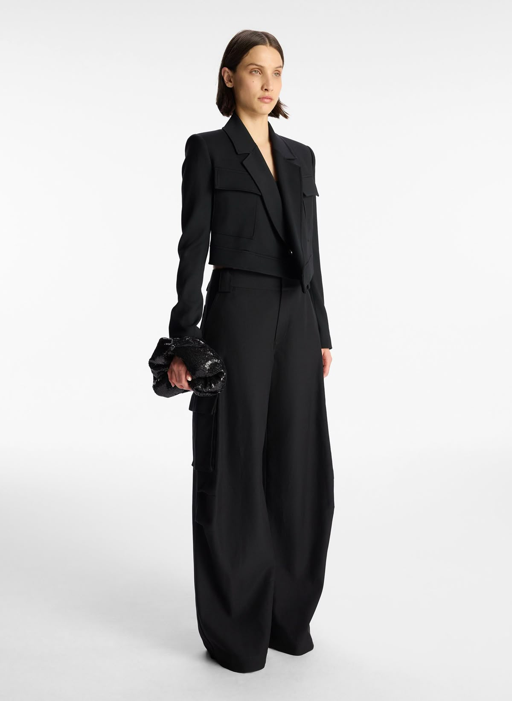
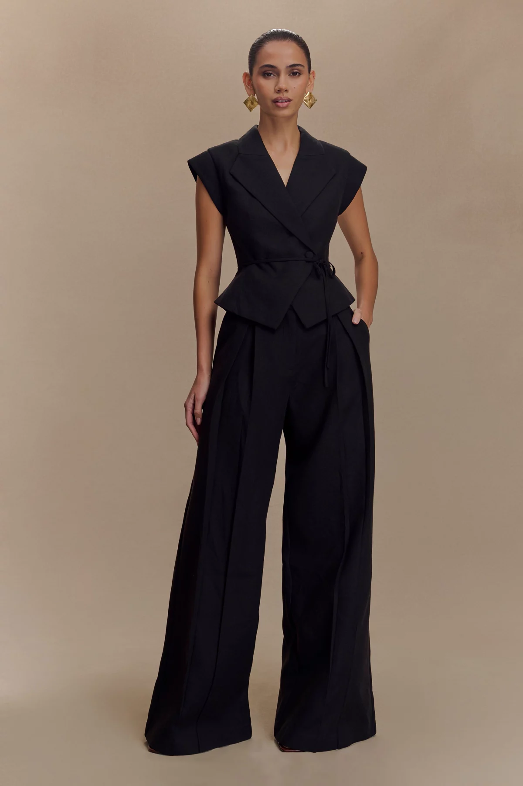
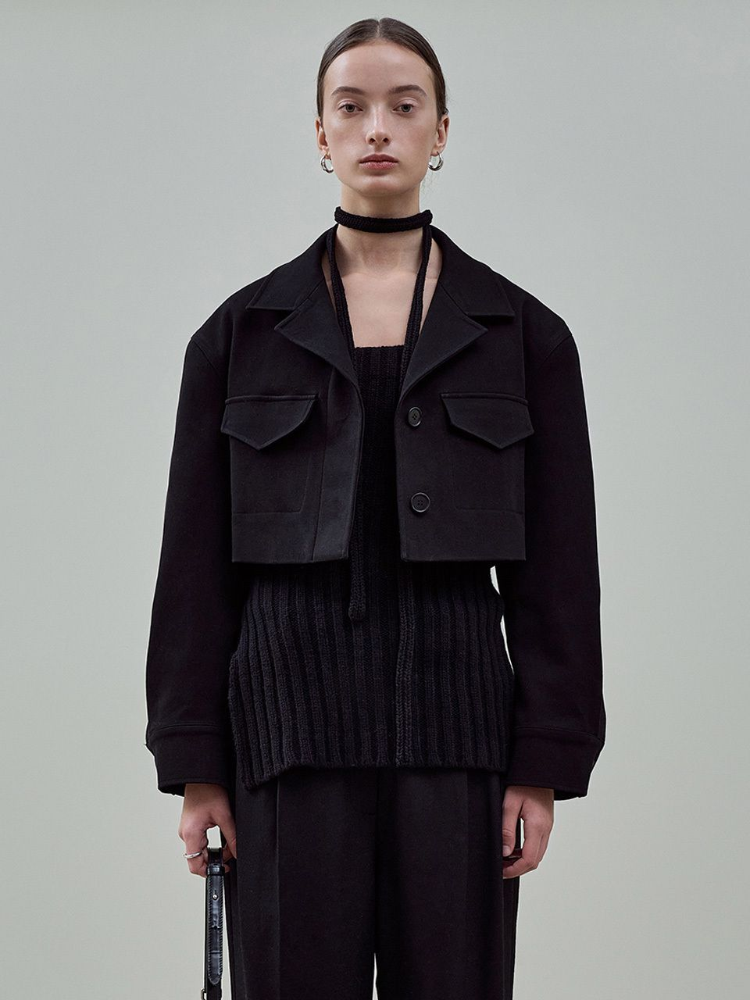
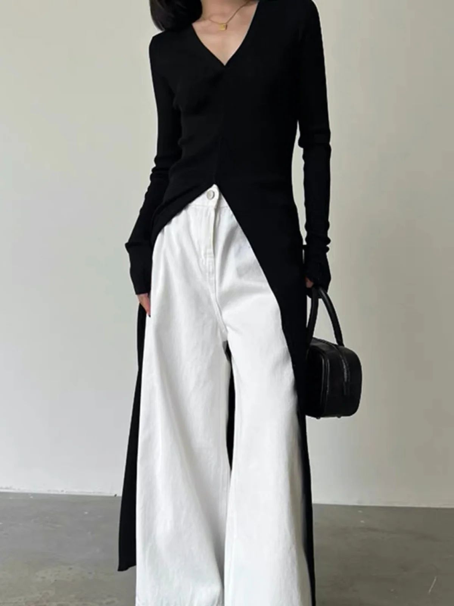
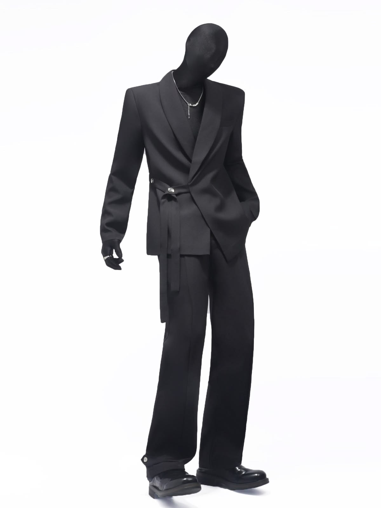

Find your best fit.
체형별로 어울리는 핏과 피해야 할 핏을 한눈에 확인하세요.

Triangle
하체가 상대적으로 발달한 체형
추천 핏
어깨 라인이 강조된 자켓, 밝은 상의 + 어두운 하의,
A라인 스커트, 크롭 상의로 상체 비율 강조
비추천 핏
스키니진, 밝은 하의, 볼륨감 있는 하의는
하체를 더욱 부각시켜 비율이 무너질 수 있음

Inverted
어깨가 넓고 하체가 슬림한 체형
추천 핏
와이드 팬츠, 플레어 스커트, A라인 하의로
하체에 볼륨을 더해 전체 균형을 맞춤
비추천 핏
어깨 패드가 강한 자켓, 하이넥, 크롭 자켓은
상체를 더 넓어 보이게 만들 수 있음

Rectangle
상체와 하체 폭이 비슷한 직선형 체형
추천 핏
벨트, 크롭 자켓, 하이웨스트 팬츠,
랩 스타일로 허리선을 만들어 입체감 추가
비추천 핏
박스핏, 일자 원피스, 오버핏 셋업은
체형을 더 평면적이고 밋밋하게 보이게 함

Hourglass
허리선이 뚜렷하고 균형 잡힌 체형
추천 핏
허리 라인이 드러나는 슬림핏, 하이웨스트,
벨티드 자켓으로 자연스러운 비율 강조
비추천 핏
허리선 없는 오버핏, 박시한 상의,
루즈한 원피스는 장점인 허리 라인을 가림

Round
상체 중심에 볼륨이 있는 체형
추천 핏
롱 아우터, V넥 상의, 스트레이트 팬츠,
세로 라인을 강조해 전체 실루엣을 정리
비추천 핏
짧은 상의, 타이트한 상의, 두꺼운 소재는
상체 볼륨을 더 강조해 답답해 보일 수 있음

Trapezoid
전체 균형이 안정적인 체형
추천 핏
테일러드 자켓, 슬림 스트레이트 팬츠,
셋업 스타일로 깔끔하고 정돈된 실루엣 유지
비추천 핏
과한 오버핏, 루즈한 하의, 무너지는 실루엣은
균형 잡힌 체형의 장점을 흐릴 수 있음